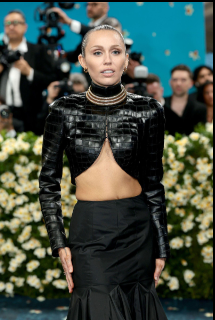

Miley Cyrus es una cantante, actriz y compositora estadounidense nacida el 23 de noviembre de 1992 en Tennessee, Estados Unidos. Alcanzó la fama mundial gracias a su papel como Hannah Montana en la exitosa serie de Disney Channel. A lo largo de su carrera, se ha destacado por su versatilidad artística, explorando distintos géneros musicales como el pop, el rock y el country. Su estilo único y su capacidad de reinventarse constantemente la han convertido en una de las artistas más influyentes de su generación. Además de su carrera en el entretenimiento, también es reconocida por su participación en causas sociales, especialmente en la defensa de los derechos LGBTQ y el bienestar animal. A lo largo de los años, su impacto ha sido reconocido tanto por críticos como por figuras de la industria. Como expresó la revista Billboard,
Miley Cyrus ha sabido redefinir su imagen sin perder autenticidad, consolidándose como una artista en constante evoluciónEsta capacidad de reinventarse, junto con su fuerte presencia mediática y su compromiso con diversas causas, ha contribuido a mantener su relevancia en el panorama cultural y musical contemporáneo.
